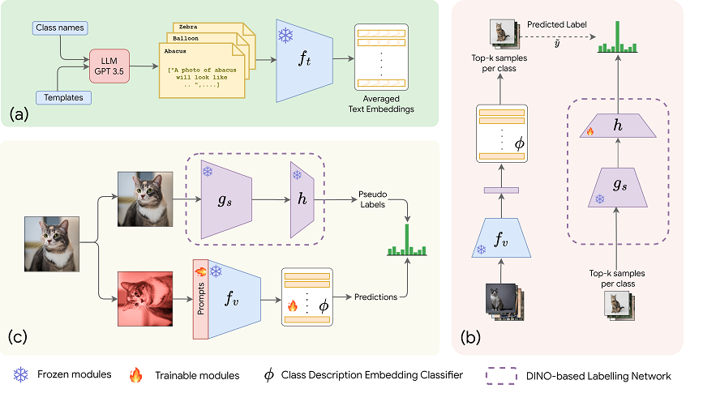

|
Fazli Imam I'm a research associate at MBZUAI in UAE, where I work on AI problems. |

|
News
- Aug 2024: Joined Dr. Alham's lab at MBZUAI as a Research Associate
- July 2024: Team mentored by our lab wins "Best Team Award" at MBZUAI Undergraduate Research Internship Program
- June 2024: Graduated with MSc in Machine Learning from Mohamed Bin Zayed University of Artificial Intelligence
- July 2023: Completed Data Science Internship at ADNOC's Panorama Digital Command Center
- Aug 2021: Started MSc in Machine Learning at Mohamed Bin Zayed University of Artificial Intelligence
Research
|

|
CLIP meets DINO for Tuning Zero-Shot Classifier using Unlabeled Image Collections
Mohamed Fazli Imam, Rufael Fedaku Marew, Jameel Hassan, Mustansar Fiaz, Alham Fikri Aji, Hisham Cholakkal arXiv, 2024 project page / arXiv We propose a label-free prompt-tuning method that leverages the rich visual features of self-supervised learning models (DINO) and the broad textual knowledge of large language models (LLMs) to largely enhance CLIP-based image classification performance using unlabelled images. |
|
|
CVQA: Culturally-diverse Multilingual Visual Question Answering Benchmark
David Romero, Chenyang Lyu∗, Haryo Akbarianto Wibowo, Thamar Solorio Alham Fikri Aji, 71 more authors , NeurIPS, 2024 project page / arXiv A Culturally-diverse multilingual Visual Question Answering benchmark, designed to cover a rich set of languages and cultures, where we engage native speakers and cultural experts in the data collection process. |
|
|
Moderate Automobile Accident Claim Process Automation Using Machine Learning
Mohamed Fazli Imam, Achinthya Subasinghe, Hiruni Kasthuriarachchi, Senura Fernando, Nadeesa Pemadasa, Prasanna Haddela 2021 International conference on computer communication and informatics (ICCCI), 2021 project page / paper We introduce a computer vision and machine learning-based system to automate the processing of minor automobile accident claims, incorporating damage assessment, repair cost estimation, and policyholder churn prediction to improve efficiency and retention outcomes. |
Mentoring

|
Department of Electronic and Telecommunication Engineering, University of Moratuwa, Sri Lanka Lectures - Introduction to Machine Learning September 2022 |
Experience

|
Research Assistant July 2022 - Present |

|
Associate Machine Learning Engineer June 2021 - February 2022 |

|
Visiting student researcher October 2020 - April 2021 Supervisor: Dr. Kanchana Thilakarathna. |
Education
|
|
MSc. in Machine Learning Aug 2022 - June 2024 |
|
|
Bachelor's in Science (Hons) in Information Technology Specializing in Data Science Jan 2016 - Dec 2020 |